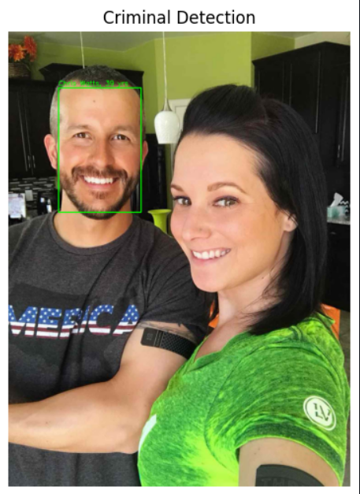
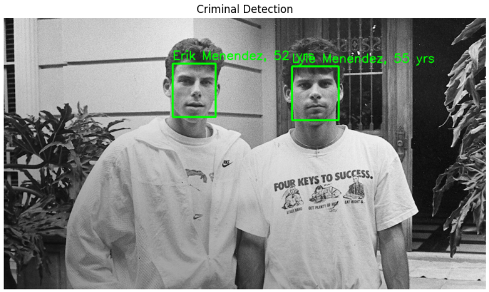

Facial Recognition
Catch
An AI-powered suspect identification concept that uses computer vision and facial recognition to support identity matching.
About the Project
Catch is an AI-powered system concept that uses computer vision and facial recognition to identify wanted individuals or look-alike matches based on forensic sketches.
The project focuses on improving search accuracy and reducing human error by using AI techniques to support identification tasks.

